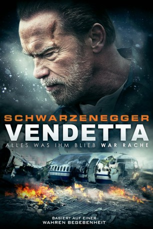

gesehen am 16.12.2017
gesehen am 16.12.2017Alternativ: Aftermath gesehen am 16.12.2017
 
 IMDB-Wertung: 5.7 / 10
IMDB-Wertung: 5.7 / 10  Metascore:
Metascore: 
Ein tragisches Ereignis verbindet die Leben zweier Fremder untrennbar voneinander: Bei einem Flugzeugabsturz kommen die Ehefrau und die schwangere Tochter von Bau-Vorarbeiter Roman ums Leben. Zu dieser Tragödie, bei der es keine Überlebenden gab, kam es während der Schicht des Fluglotsens Jake. Ein fataler Fehler führte zu dieser schrecklichen Katastrophe und lässt Roman und Jake traumatisiert zurück. Beide versuchen irgendwie mit den Geschehnissen fertig zu werden, doch eine Spirale aus Schuld und Rache zieht sie tiefer in einen zerstörerischen Abgrund. Für Roman zählt nur noch ein Gedanke: Rache. Auf Biegen und Brechen will er den Verantwortlichen für den Tod seiner Familie zur Rechenschaft ziehen und macht sich auf die Suche nach Jake…
Jahr: 2017
Dauer: 93 Minuten
FSK: 16
Land: USA Studio: Lionsgate PremiereTonspuren: DTS - ,
Untertitel: Deutsch,
Auflösung: 1080p (1920x800) Größe: 9308 MB
Regisseur: Elliott Lester
Drehbuch: Javier Gullón
Soundtrack:
Darsteller:
 Arnold Schwarzenegger als Roman
Arnold Schwarzenegger als Roman Scoot McNairy als Jake
Scoot McNairy als Jake Maggie Grace als Christina
Maggie Grace als Christina Larry Sullivan als James Gullick
Larry Sullivan als James Gullick Jason McCune als Thomas
Jason McCune als Thomas Glenn Morshower als Matt
Glenn Morshower als Matt Martin Donovan als Robert
Martin Donovan als Robert Hannah Ware als Tessa
Hannah Ware als Tessa Christopher Darga als Andrew / Corpulent Man
Christopher Darga als Andrew / Corpulent Man Teri Clark als Airline Supervisor
Teri Clark als Airline Supervisor Keith Flippen als Psychiatrist
Keith Flippen als Psychiatrist Kevin Zegers als John Gullick
Kevin Zegers als John Gullick Lewis Pullman als Stranger / Samuel
Lewis Pullman als Stranger / Samuel Mo McRae als Saab
Mo McRae als Saab Christine Dye als Employee #1
Christine Dye als Employee #1 Danny Mooney als Squirrel
Danny Mooney als Squirrel Scott A. Martin als Gardener
Scott A. Martin als Gardener Matthew W. Allen als Memorial Guest , uncredited
Matthew W. Allen als Memorial Guest , uncredited Mark Angel als Airline Passenger , uncredited
Mark Angel als Airline Passenger , uncredited Gary Chinn als Jacob's Father , uncredited
Gary Chinn als Jacob's Father , uncreditedDatei: X:\2017(N-Z)\Vendetta Alles was ihm blieb war Rache (2017, FSK16, 1920x800).mkv seit 10.11.2017
Festplatte: HD 2017(A-Z)-2018(A-F)
 Es gibt insgesamt 170 Filme in der Gruppe '2017(N-Z)'
Es gibt insgesamt 170 Filme in der Gruppe '2017(N-Z)'